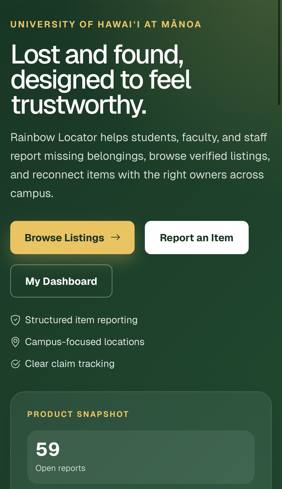
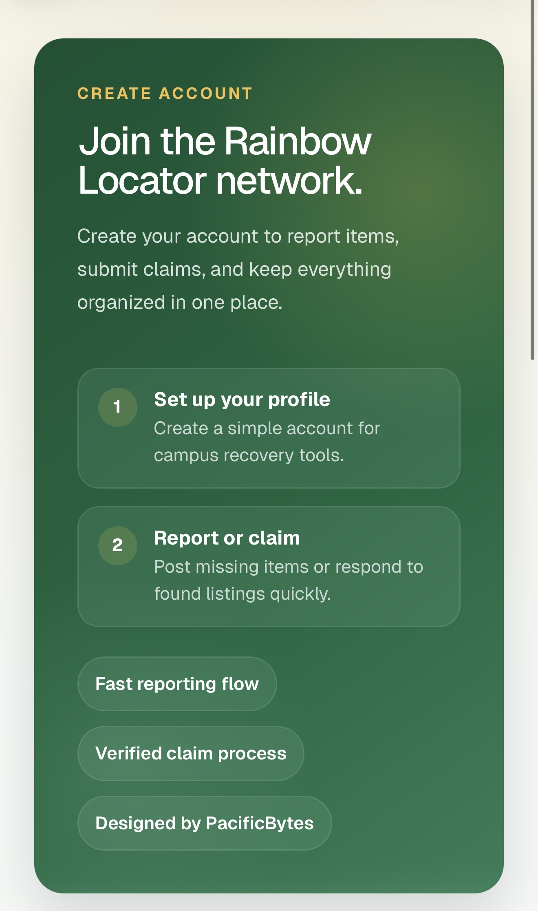
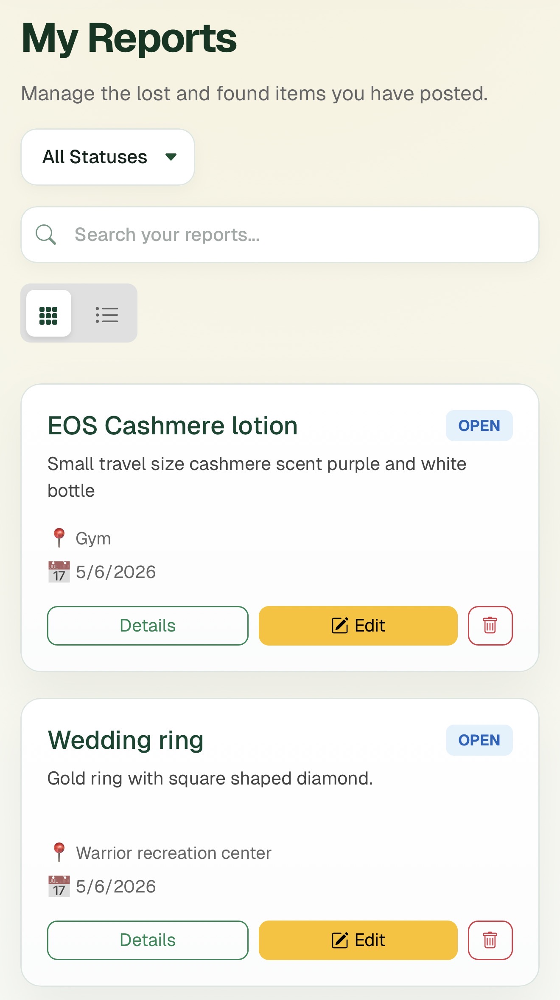

Work
Projects



Rainbow Locator
A centralized lost and found web platform for the University of Hawaiʻi at Mānoa campus, designed to help students, faculty, and staff report missing belongings, browse verified listings, and reconnect items with their rightful owners.

Giving Back to the Community
Joined the finance committee for Donte's Gift Express a three-day annual event in East Cleveland that delivers Christmas gifts to families in need. Managed budget allocation to maximize toy purchasing while covering volunteer logistics.
Read More
First UH Mānoa Navy Ball
Helped organize and plan the very first Navy Ball for the UH Mānoa NROTC battalion a formal event with no playbook or precedent. Coordinated food, music, and décor for a full military formal dinner attended by the entire unit.
Read More
Team Captain — League Champions
Led my high school basketball team as captain during our championship-winning season. Rebuilt a struggling program over four years through coaching changes, injuries, and relentless team culture ultimately winning the league trophy.
Read More